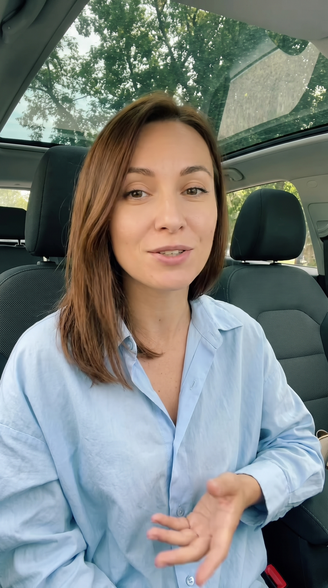

A · Gemini

Smoother appearance, looser framing.
Two original character options inspired by presenter #1’s casual car-chat setting. Recommendation: B, for its skin texture and informal feel. One 15-second Seedance clip is planned after character and script selection.

Smoother appearance, looser framing.

More visible skin texture, tighter conversational framing.
Character images: $0.061. Remaining treg balance: $10.90328. No video generated yet.